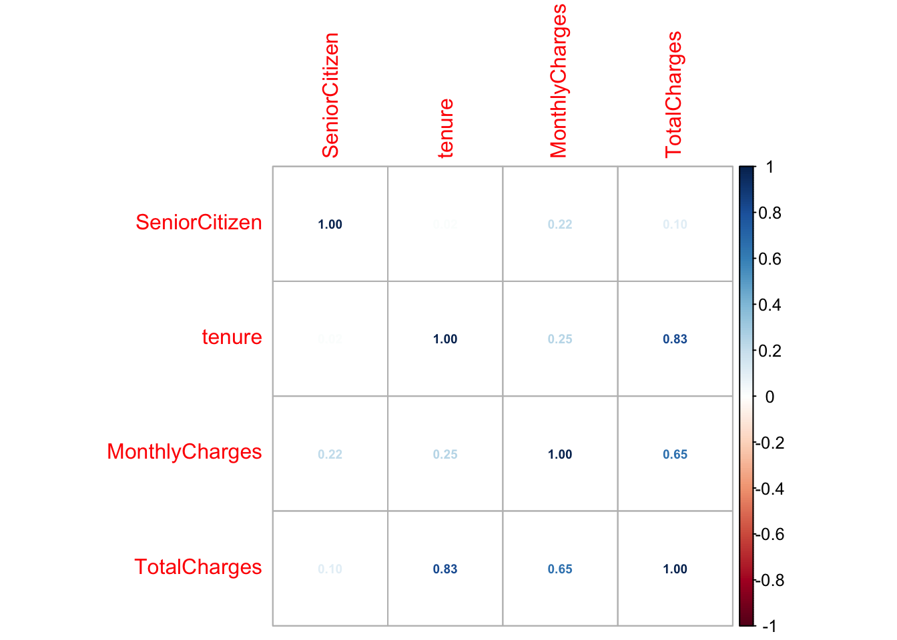

pacman::p_load(tidyverse, ggplot2, dplyr, here, skimr, corrplot)Final Project dataset options
telco_df <- read.csv(here('data', 'Telco-Customer-Churn.csv'))skim(telco_df)Warning in attr(x, "align"): 'xfun::attr()' is deprecated.
Use 'xfun::attr2()' instead.
See help("Deprecated")
Warning in attr(x, "align"): 'xfun::attr()' is deprecated.
Use 'xfun::attr2()' instead.
See help("Deprecated")
Warning in attr(x, "align"): 'xfun::attr()' is deprecated.
Use 'xfun::attr2()' instead.
See help("Deprecated")| Name | telco_df |
| Number of rows | 7032 |
| Number of columns | 21 |
| _______________________ | |
| Column type frequency: | |
| character | 17 |
| numeric | 4 |
| ________________________ | |
| Group variables | None |
Variable type: character
| skim_variable | n_missing | complete_rate | min | max | empty | n_unique | whitespace |
|---|---|---|---|---|---|---|---|
| customerID | 0 | 1 | 10 | 10 | 0 | 7032 | 0 |
| gender | 0 | 1 | 4 | 6 | 0 | 2 | 0 |
| Partner | 0 | 1 | 2 | 3 | 0 | 2 | 0 |
| Dependents | 0 | 1 | 2 | 3 | 0 | 2 | 0 |
| PhoneService | 0 | 1 | 2 | 3 | 0 | 2 | 0 |
| MultipleLines | 0 | 1 | 2 | 16 | 0 | 3 | 0 |
| InternetService | 0 | 1 | 2 | 11 | 0 | 3 | 0 |
| OnlineSecurity | 0 | 1 | 2 | 19 | 0 | 3 | 0 |
| OnlineBackup | 0 | 1 | 2 | 19 | 0 | 3 | 0 |
| DeviceProtection | 0 | 1 | 2 | 19 | 0 | 3 | 0 |
| TechSupport | 0 | 1 | 2 | 19 | 0 | 3 | 0 |
| StreamingTV | 0 | 1 | 2 | 19 | 0 | 3 | 0 |
| StreamingMovies | 0 | 1 | 2 | 19 | 0 | 3 | 0 |
| Contract | 0 | 1 | 8 | 14 | 0 | 3 | 0 |
| PaperlessBilling | 0 | 1 | 2 | 3 | 0 | 2 | 0 |
| PaymentMethod | 0 | 1 | 12 | 25 | 0 | 4 | 0 |
| Churn | 0 | 1 | 2 | 3 | 0 | 2 | 0 |
Variable type: numeric
| skim_variable | n_missing | complete_rate | mean | sd | p0 | p25 | p50 | p75 | p100 | hist |
|---|---|---|---|---|---|---|---|---|---|---|
| SeniorCitizen | 0 | 1 | 0.16 | 0.37 | 0.00 | 0.00 | 0.00 | 0.00 | 1.00 | ▇▁▁▁▂ |
| tenure | 0 | 1 | 32.42 | 24.55 | 1.00 | 9.00 | 29.00 | 55.00 | 72.00 | ▇▃▃▃▅ |
| MonthlyCharges | 0 | 1 | 64.80 | 30.09 | 18.25 | 35.59 | 70.35 | 89.86 | 118.75 | ▇▅▆▇▅ |
| TotalCharges | 0 | 1 | 2283.30 | 2266.77 | 18.80 | 401.45 | 1397.47 | 3794.74 | 8684.80 | ▇▂▂▂▁ |
telco_df %>%
select_if(is.numeric) %>%
cor() %>%
corrplot(method = 'number', number.cex = 0.6)
Interpretation of correlation matrix: Tenure and TotalCharges have strong positive correlation (0.83) but not surprisint since the longer a customer has been with the company, the more money they’ve been billed overall - will not use both of these variables in the model
We know we are going to use ‘Churn’ as our response (Y) variable, so we’re going to transform it where ‘No’=0 and ‘Yes’=1
telco_df$Churn <- ifelse(telco_df$Churn == "Yes", 1, 0)And dropping any obviously un-useful variables such as ‘CustomerID’ and ‘TotalCharges’
telco_df <- telco_df %>% select(-customerID, -TotalCharges)Converting character columns to factors
telco_df <- telco_df %>% mutate_if(is.character, as.factor)Before moving into any stepwise selection of our variables, we first split our data into train and test. We do this first to prevent our test data from intermixing with our training data which could lead to overfitting of our model.
set.seed(123)
train_index <- sample(seq_len(nrow(telco_df)), size = 0.7*nrow(telco_df))
train_data <- telco_df[train_index, ]
test_data <- telco_df[-train_index, ]Narrowing down our 21 variables to keep only the ones that would be useful for our logistic model, we use stepwise selection (both backward/forward selection) to allow for a dynamic elimination process on our training data
full_model <- glm(Churn ~ ., data = train_data, family = binomial)step_model <- step(full_model, direction = "both")Start: AIC=4185
Churn ~ gender + SeniorCitizen + Partner + Dependents + tenure +
PhoneService + MultipleLines + InternetService + OnlineSecurity +
OnlineBackup + DeviceProtection + TechSupport + StreamingTV +
StreamingMovies + Contract + PaperlessBilling + PaymentMethod +
MonthlyCharges
Step: AIC=4185
Churn ~ gender + SeniorCitizen + Partner + Dependents + tenure +
MultipleLines + InternetService + OnlineSecurity + OnlineBackup +
DeviceProtection + TechSupport + StreamingTV + StreamingMovies +
Contract + PaperlessBilling + PaymentMethod + MonthlyCharges
Df Deviance AIC
- SeniorCitizen 1 4139.0 4183.0
- gender 1 4139.0 4183.0
- TechSupport 1 4139.0 4183.0
- Partner 1 4139.1 4183.1
- OnlineSecurity 1 4139.5 4183.5
- OnlineBackup 1 4139.7 4183.7
- DeviceProtection 1 4140.2 4184.2
- MonthlyCharges 1 4140.5 4184.5
<none> 4139.0 4185.0
- StreamingTV 1 4142.4 4186.4
- StreamingMovies 1 4142.7 4186.7
- InternetService 1 4143.4 4187.4
- Dependents 1 4144.6 4188.6
- PaperlessBilling 1 4149.7 4193.7
- PaymentMethod 3 4157.8 4197.8
- MultipleLines 2 4161.7 4203.7
- Contract 2 4210.4 4252.4
- tenure 1 4290.3 4334.3
Step: AIC=4183
Churn ~ gender + Partner + Dependents + tenure + MultipleLines +
InternetService + OnlineSecurity + OnlineBackup + DeviceProtection +
TechSupport + StreamingTV + StreamingMovies + Contract +
PaperlessBilling + PaymentMethod + MonthlyCharges
Df Deviance AIC
- gender 1 4139.0 4181.0
- TechSupport 1 4139.0 4181.0
- Partner 1 4139.1 4181.1
- OnlineSecurity 1 4139.6 4181.6
- OnlineBackup 1 4139.7 4181.7
- DeviceProtection 1 4140.2 4182.2
- MonthlyCharges 1 4140.5 4182.5
<none> 4139.0 4183.0
- StreamingTV 1 4142.4 4184.4
- StreamingMovies 1 4142.7 4184.7
+ SeniorCitizen 1 4139.0 4185.0
- InternetService 1 4143.4 4185.4
- Dependents 1 4144.9 4186.9
- PaperlessBilling 1 4149.7 4191.7
- PaymentMethod 3 4157.9 4195.9
- MultipleLines 2 4161.7 4201.7
- Contract 2 4210.8 4250.8
- tenure 1 4290.8 4332.8
Step: AIC=4181.02
Churn ~ Partner + Dependents + tenure + MultipleLines + InternetService +
OnlineSecurity + OnlineBackup + DeviceProtection + TechSupport +
StreamingTV + StreamingMovies + Contract + PaperlessBilling +
PaymentMethod + MonthlyCharges
Df Deviance AIC
- TechSupport 1 4139.1 4179.1
- Partner 1 4139.1 4179.1
- OnlineSecurity 1 4139.6 4179.6
- OnlineBackup 1 4139.7 4179.7
- DeviceProtection 1 4140.2 4180.2
- MonthlyCharges 1 4140.5 4180.5
<none> 4139.0 4181.0
- StreamingTV 1 4142.4 4182.4
- StreamingMovies 1 4142.7 4182.7
+ gender 1 4139.0 4183.0
+ SeniorCitizen 1 4139.0 4183.0
- InternetService 1 4143.4 4183.4
- Dependents 1 4144.9 4184.9
- PaperlessBilling 1 4149.7 4189.7
- PaymentMethod 3 4157.9 4193.9
- MultipleLines 2 4161.8 4199.8
- Contract 2 4210.8 4248.8
- tenure 1 4290.8 4330.8
Step: AIC=4179.06
Churn ~ Partner + Dependents + tenure + MultipleLines + InternetService +
OnlineSecurity + OnlineBackup + DeviceProtection + StreamingTV +
StreamingMovies + Contract + PaperlessBilling + PaymentMethod +
MonthlyCharges
Df Deviance AIC
- Partner 1 4139.2 4177.2
- OnlineSecurity 1 4139.9 4177.9
<none> 4139.1 4179.1
- OnlineBackup 1 4141.6 4179.6
+ TechSupport 1 4139.0 4181.0
+ gender 1 4139.0 4181.0
+ SeniorCitizen 1 4139.1 4181.1
- DeviceProtection 1 4143.2 4181.2
- Dependents 1 4144.9 4182.9
- MonthlyCharges 1 4148.0 4186.0
- PaperlessBilling 1 4149.7 4187.7
- StreamingTV 1 4153.9 4191.9
- PaymentMethod 3 4158.0 4192.0
- StreamingMovies 1 4155.3 4193.3
- InternetService 1 4163.0 4201.0
- MultipleLines 2 4167.0 4203.0
- Contract 2 4211.5 4247.5
- tenure 1 4291.2 4329.2
Step: AIC=4177.15
Churn ~ Dependents + tenure + MultipleLines + InternetService +
OnlineSecurity + OnlineBackup + DeviceProtection + StreamingTV +
StreamingMovies + Contract + PaperlessBilling + PaymentMethod +
MonthlyCharges
Df Deviance AIC
- OnlineSecurity 1 4140.0 4176.0
<none> 4139.2 4177.2
- OnlineBackup 1 4141.7 4177.7
+ Partner 1 4139.1 4179.1
+ TechSupport 1 4139.1 4179.1
+ SeniorCitizen 1 4139.1 4179.1
+ gender 1 4139.1 4179.1
- DeviceProtection 1 4143.3 4179.3
- Dependents 1 4145.5 4181.5
- MonthlyCharges 1 4148.1 4184.1
- PaperlessBilling 1 4149.8 4185.8
- StreamingTV 1 4154.0 4190.0
- PaymentMethod 3 4158.2 4190.2
- StreamingMovies 1 4155.4 4191.4
- InternetService 1 4163.2 4199.2
- MultipleLines 2 4167.3 4201.3
- Contract 2 4211.7 4245.7
- tenure 1 4296.4 4332.4
Step: AIC=4175.97
Churn ~ Dependents + tenure + MultipleLines + InternetService +
OnlineBackup + DeviceProtection + StreamingTV + StreamingMovies +
Contract + PaperlessBilling + PaymentMethod + MonthlyCharges
Df Deviance AIC
<none> 4140.0 4176.0
+ OnlineSecurity 1 4139.2 4177.2
+ TechSupport 1 4139.7 4177.7
+ Partner 1 4139.9 4177.9
+ gender 1 4140.0 4178.0
+ SeniorCitizen 1 4140.0 4178.0
- OnlineBackup 1 4145.2 4179.2
- Dependents 1 4146.3 4180.3
- DeviceProtection 1 4148.1 4182.1
- PaperlessBilling 1 4150.8 4184.8
- PaymentMethod 3 4158.9 4188.9
- MonthlyCharges 1 4164.7 4198.7
- StreamingTV 1 4171.6 4205.6
- StreamingMovies 1 4173.7 4207.7
- MultipleLines 2 4177.5 4209.5
- InternetService 1 4198.9 4232.9
- Contract 2 4212.3 4244.3
- tenure 1 4299.5 4333.5The results of running our stepwise selection was that 12 out of 21 variables were determined to be important predictors to customer churn. Predictors that were dropped as significant appeared to be a lot of demographic type such as: SeniorCitizen, gender, and partner. The really important predictors appeared to be: Service usage variables: MultipleLines, InternetService, OnlineBackup, DeviceProtection, StreamingTV, StreamingMovies Contract/payment types: Contract, PaperlessBilling, PaymentMethod Tenure MonthlyCharges
Running a summary of the step_model on the training data
summary(step_model)
Call:
glm(formula = Churn ~ Dependents + tenure + MultipleLines + InternetService +
OnlineBackup + DeviceProtection + StreamingTV + StreamingMovies +
Contract + PaperlessBilling + PaymentMethod + MonthlyCharges,
family = binomial, data = train_data)
Coefficients: (4 not defined because of singularities)
Estimate Std. Error z value Pr(>|z|)
(Intercept) 2.256817 0.634314 3.558 0.000374 ***
DependentsYes -0.239355 0.095556 -2.505 0.012249 *
tenure -0.033417 0.002745 -12.175 < 2e-16 ***
MultipleLinesNo phone service -0.744185 0.307669 -2.419 0.015573 *
MultipleLinesYes 0.685944 0.112797 6.081 1.19e-09 ***
InternetServiceFiber optic 2.445068 0.324358 7.538 4.77e-14 ***
InternetServiceNo -2.234578 0.396969 -5.629 1.81e-08 ***
OnlineBackupNo internet service NA NA NA NA
OnlineBackupYes 0.259444 0.113384 2.288 0.022126 *
DeviceProtectionNo internet service NA NA NA NA
DeviceProtectionYes 0.325396 0.114754 2.836 0.004574 **
StreamingTVNo internet service NA NA NA NA
StreamingTVYes 0.904564 0.162451 5.568 2.57e-08 ***
StreamingMoviesNo internet service NA NA NA NA
StreamingMoviesYes 0.933134 0.162260 5.751 8.88e-09 ***
ContractOne year -0.778695 0.128360 -6.066 1.31e-09 ***
ContractTwo year -1.421389 0.202360 -7.024 2.15e-12 ***
PaperlessBillingYes 0.290943 0.088725 3.279 0.001041 **
PaymentMethodCredit card (automatic) -0.145864 0.133816 -1.090 0.275699
PaymentMethodElectronic check 0.263237 0.110837 2.375 0.017549 *
PaymentMethodMailed check -0.115848 0.133781 -0.866 0.386516
MonthlyCharges -0.063834 0.012953 -4.928 8.31e-07 ***
---
Signif. codes: 0 '***' 0.001 '**' 0.01 '*' 0.05 '.' 0.1 ' ' 1
(Dispersion parameter for binomial family taken to be 1)
Null deviance: 5701.5 on 4921 degrees of freedom
Residual deviance: 4140.0 on 4904 degrees of freedom
AIC: 4176
Number of Fisher Scoring iterations: 6Before running our model on the test data, we’ll perform some Odds Ratio on the step_model using the training data to further explain how each variable affects the likelihood of churn…
# odds ratios
exp(coef(step_model)) (Intercept) DependentsYes
9.5526369 0.7871354
tenure MultipleLinesNo phone service
0.9671350 0.4751212
MultipleLinesYes InternetServiceFiber optic
1.9856462 11.5313339
InternetServiceNo OnlineBackupNo internet service
0.1070373 NA
OnlineBackupYes DeviceProtectionNo internet service
1.2962094 NA
DeviceProtectionYes StreamingTVNo internet service
1.3845791 NA
StreamingTVYes StreamingMoviesNo internet service
2.4708534 NA
StreamingMoviesYes ContractOne year
2.5424659 0.4590045
ContractTwo year PaperlessBillingYes
0.2413786 1.3376886
PaymentMethodCredit card (automatic) PaymentMethodElectronic check
0.8642753 1.3011347
PaymentMethodMailed check MonthlyCharges
0.8906105 0.9381612 # odds ratios + confidence intervals
exp(cbind(OR = coef(step_model), confint(step_model)))Waiting for profiling to be done... OR 2.5 % 97.5 %
(Intercept) 9.5526369 2.76501213 33.2598000
DependentsYes 0.7871354 0.65205188 0.9484688
tenure 0.9671350 0.96190636 0.9723146
MultipleLinesNo phone service 0.4751212 0.25938134 0.8667580
MultipleLinesYes 1.9856462 1.59284496 2.4788421
InternetServiceFiber optic 11.5313339 6.12809237 21.8623690
InternetServiceNo 0.1070373 0.04907448 0.2327279
OnlineBackupNo internet service NA NA NA
OnlineBackupYes 1.2962094 1.03837861 1.6197085
DeviceProtectionNo internet service NA NA NA
DeviceProtectionYes 1.3845791 1.10625687 1.7348959
StreamingTVNo internet service NA NA NA
StreamingTVYes 2.4708534 1.79934071 3.4021683
StreamingMoviesNo internet service NA NA NA
StreamingMoviesYes 2.5424659 1.85212940 3.4994100
ContractOne year 0.4590045 0.35585049 0.5887675
ContractTwo year 0.2413786 0.16027621 0.3549609
PaperlessBillingYes 1.3376886 1.12441213 1.5922507
PaymentMethodCredit card (automatic) 0.8642753 0.66452443 1.1231353
PaymentMethodElectronic check 1.3011347 1.04766911 1.6180414
PaymentMethodMailed check 0.8906105 0.68537189 1.1581364
MonthlyCharges 0.9381612 0.91453458 0.9621874Interpretation:
We know that…
- if the OR (odds ratio) is > than 1 : The variable (predictor) increases the odds of customer churn
| Predictor | Odds Ratio (OR) | Interpretation |
|---|---|---|
| MultipleLinesYes | 1.96 | Having multiple lines nearly doubles churn odds. |
| InternetServiceFiber optic | 11.51 | Fiber optic users are 11x more likely to churn. |
| OnlineBackupYes | 1.30 | Customers with online backup are 30% more likely to churn. |
| DeviceProtectionYes | 1.35 | Customers with device protection are 35% more likely to churn. |
| StreamingTVYes | 2.47 | Streaming TV users are 2.5x more likely to churn. |
| StreamingMoviesYes | 2.54 | Streaming Movies users are 2.5x more likely to churn. |
| PaperlessBillingYes | 1.34 | Paperless billing customers are 33% more likely to churn. |
| PaymentMethodElectronic check | 1.30 | Paying by electronic check increases churn odds by 30%. |
- if the OR (odds ratio) is less than 1 : The variable (predictor) decreases the odds of customer churn
| Predictor | Odds Ratio (OR) | Interpretation |
|---|---|---|
| DependentsYes | 0.79 | Customers with dependents are 21% less likely to churn. |
| InternetServiceNo | 0.11 | Customers with no internet service are much less likely to churn. |
| ContractOne year | 0.46 | One-year contract customers are 54% less likely to churn. |
| ContractTwo year | 0.24 | Two-year contract customers are 76% less likely to churn. |
| PaymentMethodMailed check | 0.89 | Paying by mailed check slightly reduces churn risk. |
| MonthlyCharges | 0.94 | Slight effect — higher monthly charges very slightly decrease churn risk. |
Now to try our model on the test data..
pred_probs <- predict(step_model, newdata = test_data, type = "response")
pred_class <- ifelse(pred_probs > 0.5, "Yes", "No")and evaluate the performance…
table(Predicted = pred_class, Actual = test_data$Churn) Actual
Predicted 0 1
No 1412 251
Yes 138 309Interpretation of model evaluation:
The logistic regression model achieved an 81.5% accuracy on the test set. Precision was relatively strong at 69.1%, meaning when the model predicts churn, it is usually correct. However, the recall was 55.2%, indicating that about half of true churners were correctly identified. Overall, the model provides valuable insights for targeting at-risk customers, but improvements could be made to capture more churn cases.
#JUST SEEING IF I CAN MAKE A BETTER MODEL FROM THIS POINT FORWARD.
Trying out lowering the threshold to 0.4 instead
pred_class <- ifelse(pred_probs > 0.4, 1, 0)table(Predicted = pred_class, Actual = test_data$Churn) Actual
Predicted 0 1
0 1314 184
1 236 376Interpretation after dropping threshold:
By adjusting the decision threshold from 0.5 to 0.4, we did improve the model’s ability to identify churners — increased the recall from 55% to 67%. The trade-off was a small reduction in precision, but overall, the model became more effective at detecting customers who are at risk of leaving. The F1 Score also improved, indicating a better balance between precision and recall.